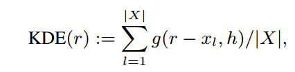

El objetivo principal de este trabajo es replicar los resultados del paper "Meta-representation of Shape Families" realizado por Noa Fish Melinos Averkiou Oliver van Kaick1 Olga Sorkine-Hornung Daniel Cohen-Or y Niloy J. Mitra.
En este trabajo los autores introducen una meta-representacion que represente la esencia de una familia de shapes o formas especificas. Esta representacion es diseñada a partir de las relaciones geometricas que contienen las figuras. Esta representacion es construida a partir de shapes co-segmentados. Los autores proponen 3 usos importantes de la metarepresentacion , la exploracion , la edicion guiada y la edicion acoplada o en masa de las formas. Como proyecto final del curso de Graficos se realizo la implementación de la exploracion y edicion guiada de los shapes o formas usando la metarepresentacion descrita por los autores del artículo.
Video
Meta-representación
El objetivo de la meta-representacion es capturar la esencia de un especifica familia de formas en terminos de las relaciones geometricas entre sus partes. Por esto como mencionan los autores es natural representar la metarepresentacion como un modelo probabilistico de las relaciones. Estas relaciones geometricas son clasificadas por los autores como unitarias (EXTENTS) y binarias (SCALES , ANGLES , CONTACTS) , definidas por los autores en las ecuaciones 3 y 4 del artículo.
Una vez obtenido el conjunto de relaciones entre las partes de cada forma de la familia de shapes , se procede a construir el modelo probabilistico representado por un Kernel Density Estimator (KDE) como los autores lo mencionan en la ecuacion (5) del articulo.

Mas detalles de las ecuaciones pueden ser revisadas en el artículo.
Implementación
En este trabajo se desarrolló la implementación de la exploración y edición guiada de shapes mediante el uso de la meterepresentacion , como lo muestra la demo del artículo en su página.
Data
Los shapes usados para este trabajo fueron obtenidos del repositorio indicado por los autores en el articulo.